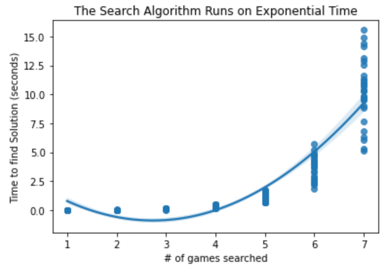

Skating on Dead Legs: Designing a Search that Prioritizes Player Health and Efficient Travel
By Gordon Liang | May 15, 2024

On March 31st, the Carolina Hurricanes defeated the Philadelphia Flyers in Raleigh, North Carolina in a gritty 3-2 contest that saw both teams collect a standing point. They then flew out to Washington DC to face the Washington Capitals the following day. They were clearly exhausted having played the night before and not having a break of over a day since March 2nd. Their penalty kill which was the second-best at the time allowed an uncharacteristic three power play goals in a 7-6 shootout loss.
Following that was a one-day off day where they flew back to Raleigh to face the Maple Leafs, beating them 2-1 in yet another exhausting tilt before flying to Pittsburgh briefly to face the Penguins and then finally flying back to Raleigh for a bout with the playoff hunting Detroit Red Wings.
If that felt like a headache to keep up with, it was four flights in a five-game/eight-day span. Not exactly ideal nor efficient to say the least. But in a league with 32 teams and an 82 game season, there are a lot of games to schedule and inefficiency isn’t always in the forefront of priorities.
To the NHL’s credit, the Hurricanes got rid of all their west coast games early in the season in one road trip. That’s efficient. They had a road trip in Canada, tackling most of their north-of-the-border matchups in one trip. That’s efficient. But how efficient has this season been?
To tackle the question, I designed the problem like a Pacman search with the goal state being a complete season and possible actions being a game to schedule. The cost function was based primarily on the distance traveled from both teams.
For example, if the Rangers just played in Scotiabank Arena and the Hurricanes just played at home, then the cost of scheduling a Hurricanes @ Rangers game would be the sum of the distance between Scotiabank Arena and Madison Square Garden and the distance between PNC Arena and Madison Square Garden.
There were some kinks to figure out as the season wasn’t as simple as ordering games to minimize travel. The first of which was that the most optimal solution would probably lean towards having half the teams stay at home for half of the season while the other half travel and then switch up at midseason.
Another issue to take into consideration was that intra divisional teams play each other multiple times over the course of a season so optimally, they’d take care of those games at the same time (if the Rangers play at home against the Canes twice in a season, those games would be scheduled back-to-back).
Lastly, the problem currently doesn’t consider when the games will be scheduled, just that they will be scheduled in a specific order.
To address all of these, a date dimension needed to be added to the problem to consider off days and homogeneity in the schedule. The cost function was changed to increase exponentially based on the number of days between games to reward giving off days. Obviously, two games being scheduled for one team on the same day was prohibited.
In addition to having games as actions, there now is the option to advance the schedule by a day. So as the search develops, we’re adding games to the schedule each day and then moving on to the next day until we find a schedule or hit the end of the season (which would mean no possible schedule within the given time span). The cost of advancing decreased exponentially as more games were scheduled that day to discourage days where only three or so games are on.
To implement the search, three types of classes were defined to represent different aspects of the problem: Schedule, Team, Game.
Schedules represented the state space. It keeps track of the date, the teams, unscheduled games and scheduled games. At each search iteration it’ll interact with the unscheduled games and teams to determine which games are allowed to be scheduled. Then given an action, it’ll return a new Schedule object with either that game scheduled (if the action was a Game) or with the date advanced by a day (if the action was to move to the next day).
Teams were in charge of telling Schedules which games were allowed to be scheduled. To increase variety in the matchups while also not having players skate until their legs needed amputation, the criteria for each game were:
- 1. The team can't play twice in a day
- 2. The team can't play the same team three times within a week
- 3. Team cannot play a back-to-back-to-back
- 4. Team cannot play more than three games in a seven day span
- 5. Team cannot have a home stand for more than five games
- 6. Team cannot have a road trip for more than five games
- 7. Team cannot play the same matchup in a back-to-back
Note that not all of these are actually league-mandated, particularly the fourth one isn’t. In order for a game to be considered, it must meet the criteria for both teams involved.
Games kept track of only the home and away teams but were implemented such that it was easier to get information. For example, Games.involves() would return a list of the two teams matched up in the game so that only they’re being queried about its validity instead of querying the whole league.
After that the rest is essentially an A* Search. For the heuristic, we summed the minimum possible distance for each game. Because cost only increased with less off days, the main concern for admissibility was overestimating the cost (PNC Arena is around 428 miles away from Madison Square Garden but if the Canes played a road game against the Islanders right beforehand, the travel distance is only 6 miles). So the heuristic currently underestimates the true cost a bit more than I’d like but it’s admissible at least.
The big kicker for this is because the problem state is enormous (there are 992 unique games in the NHL season so with advancing days the branching factor is 993), finding the solution would take an unbelievably long time even with a heuristic. However the code for everything is linked in a Jupyter Notebook at this repo along with test cases written: https://github.com/gordonliang7/NHL-scheduling
Moving forward, this design can be branched out in many ways (no pun intended). The curiosity in me is dying to find the answer and am currently searching for HPC’s to use to run this myself. The Open Computing Facility in Berkeley offers High Performance Computing.
The algorithm as it currently stands doesn’t punish longer home stands or road trips. It simply disallows those that extend past five games. This can potentially lead to schedules of alternating five game road trips and homestands as the latter is still free for the team at home. To improve the algorithm, we can consider adding a cost that increases based on the length of the road trip or home stand, similar to how off days were addressed except this cost is added to the original cost rather than exponentially increasing it.
The algorithm can also be generalized further to optimize scheduling. Currently the goal state only checks if all games inputted are scheduled. The general team criteria for an NHL Schedule are:
- 1. 4 games against 5 teams within the team’s division and 3 games against the other 3 teams in the division.
- 2. 3 games against each team in the team’s conference but outside the division
- 3. 2 games against each team outside of the team’s conference
Checking this as the goal state would optimize the schedules further as the games are also being optimized rather than the timing of them. The branching factor would remain the same at 993 but, because it won’t decrease as games are added to the schedule, a good heuristic would be needed as, without one, the search would likely repetitively find schedules by mileage– which would still take a long time– and then throw them away for not fitting that requirement at the end of the search until one is found that does work.
Another path from here would be to implement this into other sports. Baseball’s a fun sport to tackle as they schedule by series and the length of each series varies from two to four. The perfect sport for this would be football as their 17 game season is much smaller than the NHL’s 82 game season. With 272 total games, the estimated runtime of the search would be half a day on a typical at-home desktop.
Lastly, fans don’t want to have the same schedule every year. At some point the die-hards will memorize their teams schedule because it’s the same every season. While that certainly makes planning easier, it’s no fun. For fans like me who cheer on an out-of-state team and only get the chance to see them once a year, it’d suck if the optimal time for their arrival lands on a week that I’m busy every year.
To trade a little bit of optimality for variance, we can add randomness to the algorithm. Instead of increasing the cost based on off days, we can randomly choose to play or not with a probability based on off days. For the homestand and road trip criteria we can also replace them with a probability based on the current length. This allows for scheduling variance while also maintaining most of the optimality due to the probabilities being dynamic.